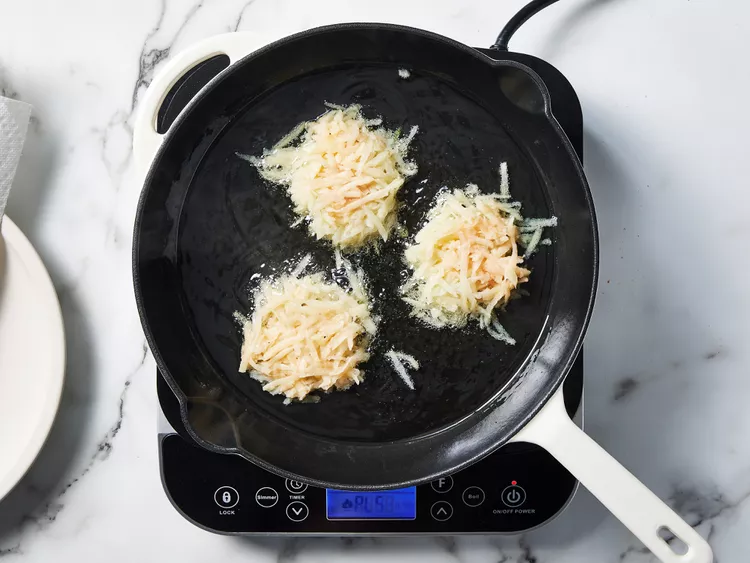

Potato Pancakes
Description
These traditional potato pancakes are wonderful comfort food. Serve with applesauce and sour cream for a light dinner, or with roast chicken for a hearty winter meal.
Ingredients
- 4 large potatoes
- 1 yellow onion
- 1 egg, beaten
- 1 teaspoon salt
- ground black pepper to taste
- 2 tablespoons all-purpose flour, or more as needed
- 1 cup vegetable oil for frying, or as needed
Steps
- Step 1: Gather all ingredients. Preheat the oven to low, about 200 degrees F (95 degrees C).
- Step 2: Finely grate potatoes and onion into a large bowl. Drain off any excess liquid.
- Step 3: Mix in egg, salt, and pepper. Add enough flour to make the mixture thick, about 2 to 4 tablespoons all together.
- Step 4: Heat 1/4 inch oil in the bottom of a heavy skillet over medium-high heat. Drop two or three 1/4-cup mounds of batter into hot oil, and flatten with back of a spatula to make 1/2-inch-thick pancakes.

- Step 5: Fry, turning pancakes once, until golden brown. Transfer pancakes to a plate lined with a paper towel to drain. Keep warm in the oven until serving. Repeat until all potato mixture is used.
- Step 6: Serve warm, enjoy!